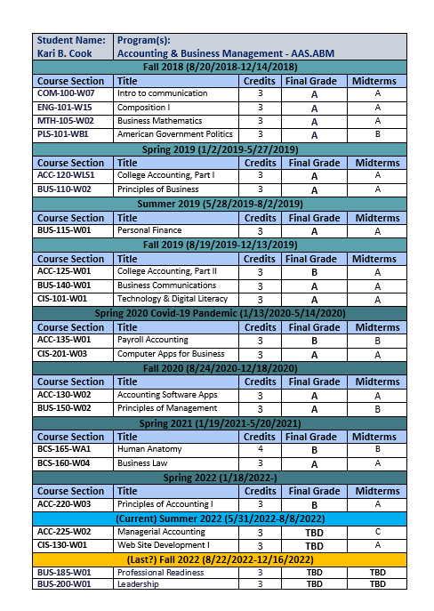

Kari Cook
My name is Kari Cook and I am 36 years old. I am a Christian, been married for 13 years, have 2 boys and a dog-child. Through struggles and hardships I have learned to adapt and overcome challenges I have faced. I am learning more about who I am with every step I take in a positive direction.
Education Struggles Overcome
When I was in high school I was homeschooled. Little did I know that when it was time to graduate that I could not get my diploma through the church I was obtaining resources from. So, I attempted to go back to school but they would only allow me to start over. I completed one year of 9th grade at 18 years old and trying to work. I decided 3 more years of public schools was not for me so I attempted classes for the GED and did not follow through. Four years ago I was inspired to be an example to my boys and try again. At the Dream Center they offered child-care to me so I could study. The test was called the HiSet and I studied for 3 months, twice a week, and eventually passed each of the four tests. I was encouraged by the OTC HiSet teacher, Jaydean Miller, to keep pursuing an education. I am now a college student and soon to be graduate.
Current Education & Certification
I have been enrolled and attending online classes at OTC for almost 4 years. I have a Certificate in Accounting and will graduate with an Associates Degree in Accounting and Business Management by the end of 2022.
Classes Taken
Inspired by WebDev
I happened upon an elective class for Website Development that has really sparked interest in me. I have learned many skills about WebDev that I will be able to utilize in future career choices. This ignition has even made me rethink continuing my education for Website Development.